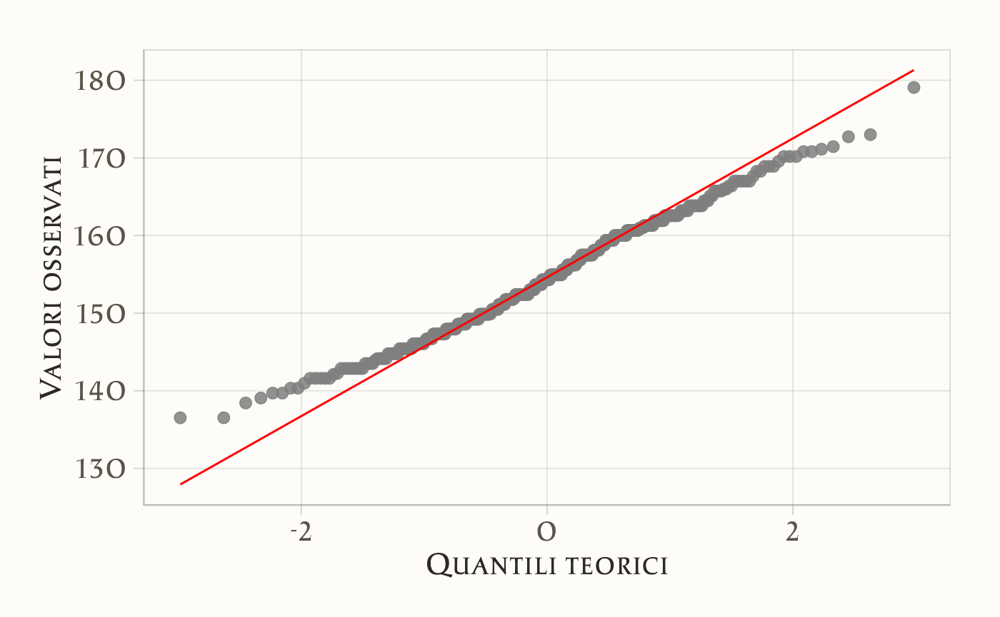

here::here("code", "_common.R") |>
source()
# Load packages
if (!requireNamespace("pacman")) install.packages("pacman")
pacman::p_load(cmdstanr, posterior, bayestestR, brms, ggdist)65 Inferenza bayesiana su una media
In questo capitolo imparerai a
- fare inferenza sulla media di un campione;
- trovare le distribuzioni a posteriori usando
brms; - verificare il modello usando i pp-check plots.
Prerequisiti
- Leggere il capitolo Geocentric models di Statistical rethinking (McElreath, 2020).
65.1 Preparazione del Notebook
65.2 Introduzione
L’obiettivo principale di questo capitolo è esaminare un contesto che abbiamo già preso in considerazione in precedenza: ci troviamo di fronte a un campione di dati misurati su una scala a intervalli o rapporti e desideriamo effettuare inferenze sulla media della popolazione da cui il campione è stato estratto. Tuttavia, anziché procedere con una derivazione analitica della distribuzione a posteriori della media della popolazione, in questo caso utilizzeremo brms.
65.3 Il modello Normale
I priori coniugati Normali di una Normale non richiedono l’approssimazione numerica ottenuta mediante metodi MCMC. In questo capitolo, tuttavia, ripetiamo l’esercizio descritto nel Capitolo 52 usando brms.
65.4 Un esempio concreto
Per applicare il modello Normale, utilizzeremo i dati del censimento parziale dell’area di Dobe dei !Kung San, raccolti attraverso interviste condotte da Nancy Howell alla fine degli anni ’60. I !Kung San sono una suddivisione della popolazione San, che vive nel deserto del Kalahari, tra Namibia, Botswana e Angola, e mantengono un’economia basata su caccia e raccolta. Riprodurremo l’analisi descritta da McElreath (2020), esaminando unicamente i valori dell’altezza di individui di età superiore ai 18 anni.
df <- rio::import(here::here("data", "Howell_18.csv"))
df |>
head()
#> height weight age male
#> 1 151.8 47.83 63 1
#> 2 139.7 36.49 63 0
#> 3 136.5 31.86 65 0
#> 4 156.8 53.04 41 1
#> 5 145.4 41.28 51 0
#> 6 163.8 62.99 35 1Il campione include 352 osservazioni:
length(df$height)
#> [1] 352ggplot(df, aes(x = height)) +
geom_histogram(binwidth = 5, color = "black", fill = "lightblue") +
labs(title = "Istogramma dell'Altezza", x = "Altezza (cm)", y = "Frequenza") +
theme(
plot.title = element_text(hjust = 0.5)
)
Come indicato dall’istogramma, i dati sono approssimativamente distribuiti in maniera gaussiana:
df |>
ggplot(aes(sample = height)) +
stat_qq() +
stat_qq_line(colour = "red") +
labs(
title = "Normal Q-Q plot",
x = "Teorici (Z-score)",
y = "Valori osservati"
) +
theme(
plot.title = element_text(hjust = 0.5)
)
In realtà, dal Q-Q plot si nota un piccolo scostamento sistematico. Quando la retta che approssima i punti empirici risulta più piatta rispetto alla diagonale teorica (che avrebbe pendenza 1 se i dati fossero perfettamente normali), la distribuzione empirica risulta meno dispersa di una Gaussiana di riferimento: i quantili empirici aumentano più lentamente di quelli teorici, indicando una varianza leggermente inferiore (o code meno ampie). Nel caso presente, tuttavia, questo scostamento è di modesta entità e si può comunque procedere all’adattamento di un modello gaussiano.
La media dei valori dell’altezza nel campione è:
mean(df$height)
#> [1] 154.6con una deviazione standard pari a:
sd(df$height)
#> [1] 7.74265.5 Modello frequentista semplice
Iniziamo con un modello frequentista molto semplice, in cui ipotizziamo che ogni osservazione \(y_i\) sia generata dal modello:
\[ y_i = \alpha + \varepsilon_i, \]
dove \(\varepsilon_i\) è un errore aleatorio con media zero (ad esempio, \(\varepsilon_i \sim \mathcal{N}(0, \sigma^2)\)) e \(\alpha\) è la sola incognita (intercetta). Poiché non ci interessa includere altre variabili predittive, stiamo stimando semplicemente la media di \(y\).
La stima di \(\alpha\) è basata sul principio di massima verosimiglianza, senza informazioni a priori. In R, con l’approccio frequentista, ci basta usare:
fm1 <- lm(
formula = height ~ 1,
data = df
)Qui, height ~ 1 indica che vogliamo un modello con sola intercetta (nessuna covariata). Analizziamo il risultato:
summary(fm1)
#>
#> Call:
#> lm(formula = height ~ 1, data = df)
#>
#> Residuals:
#> Min 1Q Median 3Q Max
#> -18.072 -6.007 -0.292 6.058 24.473
#>
#> Coefficients:
#> Estimate Std. Error t value Pr(>|t|)
#> (Intercept) 154.597 0.413 375 <2e-16
#>
#> Residual standard error: 7.74 on 351 degrees of freedomsummary(fm1)mostra la stima puntuale di \(\alpha\) (che è la media campionaria diheight) assieme ad altri indicatori (p-value, R-squared e così via, anche se in questo caso non ha senso parlare di R-squared con un solo parametro).
65.5.1 Intervallo di confidenza al 95% per \(\alpha\)
Per calcolare l’intervallo di confidenza al 95% della stima del parametro \(\alpha\) secondo l’approccio frequentista, possiamo utilizzare il comando:
confint(fm1, level = 0.95)
#> 2.5 % 97.5 %
#> (Intercept) 153.8 155.4Questo intervallo si basa sulla seguente formula classica:
\[ \hat{\alpha} \pm t_{df} \cdot \text{SE}(\hat{\alpha}), \]
dove:
- \(\hat{\alpha}\) è la stima puntuale del parametro,
- \(t\_{df}\) è il quantile della distribuzione t di Student con i gradi di libertà appropriati (in genere \(n - 2\) in una regressione lineare semplice),
- \(\text{SE}(\hat{\alpha})\) è l’errore standard della stima.
In alternativa, possiamo calcolare manualmente l’intervallo con:
coef(fm1) + c(-1, 1) * qt(0.975, df.residual(fm1)) * 0.413
#> [1] 153.8 155.4Qui:
coef(fm1)restituisce la stima di \(\alpha\),qt(0.975, df.residual(fm1))restituisce il valore critico della distribuzione \(t\) per un intervallo al 95% (con 2,5% di probabilità in ciascuna coda),0.413è l’errore standard associato a \(\hat{\alpha}\).
Questo procedimento produce un intervallo di confidenza al 95% basato sulle proprietà della distribuzione campionaria e sull’assunzione che gli errori siano distribuiti normalmente e indipendentemente.
65.6 Modello bayesiano senza specificare priori (priori uniformi)
Ora vogliamo replicare lo stesso modello usando un approccio bayesiano con il pacchetto brms. Se non specifichiamo esplicitamente la distribuzione a priori di \(\alpha\), brms userà di default un prior debolmente informativo, di fatto molto simile a non avere un’informazione a priori.
Il codice è analogo a quello usato in precedenza:
fm2 <- brm(
formula = height ~ 1,
data = df,
backend = "cmdstanr"
)- Anche qui, il modello è \(y_i = \alpha + \varepsilon_i\), ma è gestito in modo bayesiano.
summary(fm2)mostrerà la posterior mean (o mediana, a seconda dei parametri di configurazione) per \(\alpha\), l’errore standard e l’intervallo di credibilità.
summary(fm2)
#> Family: gaussian
#> Links: mu = identity; sigma = identity
#> Formula: height ~ 1
#> Data: df (Number of observations: 352)
#> Draws: 4 chains, each with iter = 2000; warmup = 1000; thin = 1;
#> total post-warmup draws = 4000
#>
#> Regression Coefficients:
#> Estimate Est.Error l-95% CI u-95% CI Rhat Bulk_ESS Tail_ESS
#> Intercept 154.59 0.41 153.76 155.38 1.00 2729 2179
#>
#> Further Distributional Parameters:
#> Estimate Est.Error l-95% CI u-95% CI Rhat Bulk_ESS Tail_ESS
#> sigma 7.77 0.30 7.20 8.37 1.00 3096 2129
#>
#> Draws were sampled using sample(hmc). For each parameter, Bulk_ESS
#> and Tail_ESS are effective sample size measures, and Rhat is the potential
#> scale reduction factor on split chains (at convergence, Rhat = 1).65.6.1 Intervallo di credibilità
L’output di summary(fm2) presenta di default l’intervallo di credibilità al 95%. Questo valore può essere modificato con l’argomento prob =, ad esempio summary(fm2, prob = 0.90) per un 90% di credibilità.
In assenza di un prior informativo, la distribuzione a posteriori è sostanzialmente uguale a quella massima verosimiglianza (più un’eventuale correzione di normalizzazione), quindi i risultati numerici corrispondono molto da vicino a quelli ottenuti dal metodo frequentista. Piccole discrepanze sono dovute alle approssimazioni MCMC.
65.7 Differenze di interpretazione degli intervalli
Approccio frequentista:
- L’intervallo di confidenza (ad esempio \([153.78, 155.41]\)) è un procedimento statistico che, se ripetuto molte volte su campioni diversi, “catturerà” il vero valore di \(\alpha\) nel 95% dei casi. In altre parole, è un’affermazione sul metodo di costruzione dell’intervallo, non sull’incertezza del parametro in sé.
- Non è lecito dire “c’è il 95% di probabilità che \(\alpha\) stia nell’intervallo \([153.78, 155.41]\)”. La probabilità si riferisce alla procedura di campionamento dei dati, non al parametro (che nel frequentismo è considerato fisso e ignoto).
- L’intervallo di confidenza (ad esempio \([153.78, 155.41]\)) è un procedimento statistico che, se ripetuto molte volte su campioni diversi, “catturerà” il vero valore di \(\alpha\) nel 95% dei casi. In altre parole, è un’affermazione sul metodo di costruzione dell’intervallo, non sull’incertezza del parametro in sé.
Approccio bayesiano:
- L’intervallo di credibilità \([153.78, 155.41]\) al 95% dice che, dati i dati osservati e la prior (qui praticamente uniforme), c’è il 95% di probabilità che \(\alpha\) appartenga a quell’intervallo.
- Qui la probabilità è assegnata direttamente al parametro \(\alpha\), perché nella prospettiva bayesiana il parametro è visto come una variabile aleatoria che riflette la nostra incertezza prima dell’osservazione dei dati (prior) e dopo l’osservazione dei dati (posterior).
- L’intervallo di credibilità \([153.78, 155.41]\) al 95% dice che, dati i dati osservati e la prior (qui praticamente uniforme), c’è il 95% di probabilità che \(\alpha\) appartenga a quell’intervallo.
In sintesi:
- secondo l’approccio frequentista: l’intervallo di fiducia è una proprietà della procedura di stima; il parametro è fisso, i dati sono casuali.
- secondo l’approccio Bayesiano: l’intervallo di credibilità è una proprietà della distribuzione a posteriori; il parametro è casuale (nel senso che abbiamo incertezza su di esso), e i dati sono osservati.
65.8 Riportare i Risultati
Nel caso frequentista, il risultato può essere riportato nel modo seguente:
l’analisi ha fornito una stima puntuale di α pari a 154.6, con un intervallo di confidenza al 95% compreso tra [153.8; 155.4].
Nel caso bayesiano diciamo:
l’analisi bayesiana, condotta con una prior non informativa, ha restituito una stima a posteriori di α pari a 154.6, con un intervallo di credibilità al 95% [153.8; 155.4].
65.9 Conclusioni Intermedie
Utilizzando la funzione
lm()(modello lineare in ottica frequentista), otteniamo la stima di \(\alpha\) tramite il metodo della massima verosimiglianza, accompagnata da un intervallo di confidenza al 95%.Con
brm()(modello bayesiano), e adottando un prior piatto (o debolmente informativo), otteniamo valori numerici molto simili a quelli frequentisti. Tuttavia, cambia in modo sostanziale la prospettiva interpretativa dell’intervallo di credibilità: ad esempio, un intervallo come \([153{,}78,\ 155{,}41]\) ha, in ambito bayesiano, il significato di probabilità a posteriori che \(\alpha\) cada in quell’intervallo.Se invece decidessimo di includere informazioni a priori specifiche (es. da ricerche precedenti), potremmo specificare un prior informativo su \(\alpha\) all’interno di
brm(). In tal caso, i risultati non coincidono più con quelli frequentisti, specialmente quando i dati sono poco informativi o la numerosità del campione è ridotta.
65.10 Uso dei Prior nel Modello Bayesiano
Nel contesto bayesiano, possiamo incorporare conoscenze pregresse attraverso la specificazione di distribuzioni a priori sui parametri del modello. In questo esempio, assegniamo:
- una distribuzione a priori \(\mathcal{N}(181, 30)\) al parametro \(\mu\), che rappresenta l’altezza media;
- una distribuzione a priori \(\mathcal{N}(0, 20)\) (troncata inferiormente a zero) al parametro \(\sigma\), che rappresenta la deviazione standard dell’altezza.
Come suggerito da McElreath (2020), la scelta di centrare il prior su \(\mu = 181\) riflette una conoscenza soggettiva informata: in questo caso, l’altezza dell’autore stesso, utilizzata come riferimento iniziale per il valore atteso della media.
65.10.1 Specifica del modello
Il modello bayesiano può quindi essere descritto come segue:
\[ \begin{aligned} Y_i &\sim \mathcal{N}(\mu, \sigma) \\ \mu &\sim \mathcal{N}(181,\ 30) \\ \sigma &\sim \mathcal{N}^+(0,\ 20) \end{aligned} \]
dove \(\mathcal{N}^+\) indica una normale troncata inferiormente a zero, per assicurare che \(\sigma\) assuma solo valori positivi, come richiesto per una deviazione standard.
In questo contesto:
- \(Y_i\) rappresenta l’altezza osservata per ciascun individuo;
- \(\mu\) e \(\sigma\) sono i parametri da stimare;
- entrambi sono trattati come quantità aleatorie, soggette a incertezza.
65.10.2 Codice in brms
Ecco la specifica del modello in brms:
fm3 <- brm(
formula = height ~ 1, # Modello con sola intercetta (μ)
data = df,
family = gaussian(), # Distribuzione normale
prior = c(
prior(normal(181, 30), class = "Intercept"), # Prior su μ
prior(normal(0, 20), class = "sigma") # Prior su σ (verrà troncata automaticamente)
),
chains = 4,
iter = 2000,
seed = 1234,
backend = "cmdstanr"
)Una volta stimato il modello, possiamo esaminare il riepilogo dei risultati con:
summary(fm3)
#> Family: gaussian
#> Links: mu = identity; sigma = identity
#> Formula: height ~ 1
#> Data: df (Number of observations: 352)
#> Draws: 4 chains, each with iter = 2000; warmup = 1000; thin = 1;
#> total post-warmup draws = 4000
#>
#> Regression Coefficients:
#> Estimate Est.Error l-95% CI u-95% CI Rhat Bulk_ESS Tail_ESS
#> Intercept 154.60 0.41 153.80 155.41 1.00 3156 2659
#>
#> Further Distributional Parameters:
#> Estimate Est.Error l-95% CI u-95% CI Rhat Bulk_ESS Tail_ESS
#> sigma 7.77 0.29 7.20 8.38 1.00 3256 2596
#>
#> Draws were sampled using sample(hmc). For each parameter, Bulk_ESS
#> and Tail_ESS are effective sample size measures, and Rhat is the potential
#> scale reduction factor on split chains (at convergence, Rhat = 1).Anche con questi prior debolmente informativi, l’intervallo di credibilità per \(\mu\) (o \(\alpha\), se lo chiamiamo così nel modello) risulta molto simile all’intervallo di confidenza ottenuto con l’approccio frequentista. Questo accade perché i dati sono sufficientemente informativi da “dominare” il priore.
65.10.3 Intervallo di credibilità all’89%
Possiamo specificare un diverso livello di credibilità, ad esempio l’89%, come proposto da McElreath (2020):
summary(fm3, prob = 0.89)
#> Family: gaussian
#> Links: mu = identity; sigma = identity
#> Formula: height ~ 1
#> Data: df (Number of observations: 352)
#> Draws: 4 chains, each with iter = 2000; warmup = 1000; thin = 1;
#> total post-warmup draws = 4000
#>
#> Regression Coefficients:
#> Estimate Est.Error l-89% CI u-89% CI Rhat Bulk_ESS Tail_ESS
#> Intercept 154.60 0.41 153.94 155.27 1.00 3156 2659
#>
#> Further Distributional Parameters:
#> Estimate Est.Error l-89% CI u-89% CI Rhat Bulk_ESS Tail_ESS
#> sigma 7.77 0.29 7.32 8.25 1.00 3256 2596
#>
#> Draws were sampled using sample(hmc). For each parameter, Bulk_ESS
#> and Tail_ESS are effective sample size measures, and Rhat is the potential
#> scale reduction factor on split chains (at convergence, Rhat = 1).Il risultato ottenuto è in linea con quanto riportato da McElreath (2020), nonostante egli utilizzi una diversa implementazione bayesiana (il pacchetto rethinking).
McElreath (2020) giustifica in modo ironico ma efficace la scelta dell’intervallo all’89%:
Why 89%? It’s just the default. It displays a quite wide interval, so it shows a high-probability range of parameter values. If you want another interval, such as the conventional and mindless 95%, you can use
precis(m4.1, prob = 0.95). But I don’t recommend 95% intervals, because readers will have a hard time not viewing them as significance tests. 89 is also a prime number, so if someone asks you to justify it, you can stare at them meaningfully and incant, ‘Because it is prime.’ That’s no worse justification than the conventional justification for 95%.
Oltre all’ironia, il messaggio è chiaro: la scelta dell’intervallo di credibilità deve riflettere una rappresentazione onesta dell’incertezza, piuttosto che un’adesione meccanica a convenzioni statistiche.
65.11 Funzioni bayesplot
Il pacchetto bayesplot mette a disposizione un insieme di funzioni molto utili per visualizzare la distribuzione a posteriori di uno o più parametri e per verificare la bontà di adattamento del modello ai dati.
65.11.1 Traceplot
Un traceplot consente di verificare la convergenza delle catene MCMC e di controllare l’autocorrelazione dei campioni a posteriori. Nel seguente esempio, si mostrano le tracce (i valori campionati lungo le iterazioni) per i parametri “Intercept” e “sigma”:
mcmc_trace(
fm3,
pars = c("Intercept", "sigma"),
facet_args = list(nrow = 2)
)
- L’asse orizzontale indica il numero di iterazione MCMC,
- L’asse verticale mostra il valore assunto dal parametro in quella iterazione,
- Avere catene che si mescolano bene e appaiono “stazionarie” (senza trend crescenti o calanti) è un buon segnale di convergenza.
65.11.2 Distribuzione a posteriori di un singolo parametro
Se vogliamo visualizzare la distribuzione a posteriori di un singolo parametro (ad esempio l’intercetta, qui chiamata “b_Intercept” nel modello brms), possiamo usare:
mcmc_areas(fm3, regex_pars = "b_Intercept", prob = 0.89)
- Viene mostrata la densità a posteriori, con un’area evidenziata corrispondente all’89% di credibilità (specificabile con
prob = 0.89o un altro valore).
- Se desideriamo un intervallo di credibilità al 95%, useremo
prob = 0.95.
65.11.3 Rappresentazione congiunta di due parametri
Per studiare la relazione tra due parametri (ad esempio “Intercept” e “sigma”):
mcmc_scatter(fm3, pars = c("Intercept", "sigma"))
- Si ottiene un diagramma di dispersione dei campioni a posteriori sui due assi, uno per ciascun parametro, con eventuali isodensità che mostrano le aree più probabili nella distribuzione congiunta.
65.11.4 Posterior Predictive Check
La funzione pp_check() è utilizzata per valutare se il modello è in grado di riprodurre i dati osservati:
pp_check(fm3)
- Questa funzione genera un confronto tra la distribuzione dei dati reali (rappresentati, ad esempio, con una linea nera su un istogramma) e la distribuzione di diversi dataset simulati dal modello, sfruttando la distribuzione a posteriori dei parametri (\(\alpha\), \(\sigma\), ecc.).
- Poiché il modello bayesiano è generativo, possiamo campionare nuovi dati “fittizi” a partire da ogni draw della posterior: in questo modo otteniamo molteplici dataset simulati, ognuno generato con un diverso valore di \(\alpha\) e \(\sigma\) estratto dalle distribuzioni posteriori.
Nel grafico prodotto da pp_check(), i dati osservati compaiono spesso come linea continua nera, mentre i dati simulati dal modello (ad esempio, 8 repliche di default) sono mostrati in colori più chiari o linee semitrasparenti. Se la distribuzione empirica si sovrappone bene a quelle generate, significa che il modello spiega adeguatamente i dati.
- Nel nostro caso, notiamo che le distribuzioni simulate risultano molto simili a quella osservata, indicando che la stima di \(\alpha\) e \(\sigma\) cattura in modo soddisfacente la variabilità dei dati.
- Se invece avessimo osservato discrepanze sistematiche (ad esempio, dati reali con code più pesanti, oppure un picco in posizioni diverse rispetto alle distribuzioni simulate), ci saremmo insospettiti riguardo all’adeguatezza del modello. In situazioni del genere, conviene rivedere le assunzioni (e.g. normalità, varianza costante, eventuali covariate assenti, ecc.) prima di trarre conclusioni dai risultati a posteriori.
In sintesi, il pacchetto bayesplot fornisce strumenti fondamentali per:
- Valutare la convergenza delle catene MCMC (traceplot, autocorrelation plots),
- Esplorare la distribuzione a posteriori dei parametri (mcmc_areas, mcmc_density, mcmc_scatter, …),
- Verificare la bontà del modello rispetto ai dati osservati mediante posterior predictive checks (pp_check).
Queste analisi grafiche forniscono informazioni cruciali sia sulla qualità del campionamento (e dunque sulla stabilità delle stime) sia sull’adeguatezza delle ipotesi modellistiche adottate.
65.12 L’approccio Tradizionale
Prima dell’avvento dei metodi bayesiani e di altri approcci moderni, l’inferenza sulla media di una popolazione veniva spesso affrontata ricorrendo al test t di Student.
65.12.1 La statistica T di Student
Il test si basa sulla seguente statistica:
\[ T = \frac{\bar{X} - \mu_0}{s / \sqrt{n}}, \]
dove:
- \(\bar{X}\) è la media campionaria di \(n\) osservazioni,
- \(\mu_0\) è il valore ipotizzato dalla cosiddetta “ipotesi nulla” (solitamente \(\mu_0 = 0\), ma può essere qualsiasi valore di riferimento),
- \(s\) è la deviazione standard campionaria corretta (ovvero stimatore di \(\sigma\)),
- \(n\) è la dimensione del campione.
Quando \(\sigma\) (deviazione standard vera) è sconosciuta e sostituita da \(s\), la statistica \(\,T\) segue (in teoria) una distribuzione t di Student con \(n - 1\) gradi di libertà:
\[ T \sim t_{(n-1)}. \]
65.12.2 Collegamento con la distribuzione Z
Se \(\sigma\) fosse nota, useremmo la statistica:
\[ Z = \frac{\bar{X} - \mu}{\sigma / \sqrt{n}}, \]
la quale segue una distribuzione Normale Standard (\(Z \sim \mathcal{N}(0,1)\)). Quando invece \(\sigma\) è sostituita da \(s\), la distribuzione di questa statistica diventa una t di Student (che, per \(n\) grande, si avvicina molto alla \(\mathcal{N}(0,1)\)).
65.12.3 Intervallo di confidenza
Con il test t di Student, si ottiene anche il tradizionale intervallo di confidenza al 95% per \(\mu\):
\[ \bar{X} \pm t_{0.975,\,n-1} \cdot \frac{s}{\sqrt{n}}, \]
dove \(t_{0.975,\,n-1}\) è il quantile al 97.5% della distribuzione t con \(n-1\) gradi di libertà (circa 2.0 se \(n\) è sufficientemente grande, mentre 1.96 è il valore per la distribuzione normale standard).
65.12.3.1 Esempio in R
Nell’esempio riportato, se vogliamo costruire l’intervallo di confidenza al 95% manualmente, possiamo scrivere:
mean(df$height) +
c(-1, 1) * qt(0.975, length(df$height) - 1) * (sd(df$height) / sqrt(length(df$height)))
#> [1] 153.8 155.4oppure usare direttamente la funzione:
t.test(df$height, mu = 0)
#>
#> One Sample t-test
#>
#> data: df$height
#> t = 375, df = 351, p-value <2e-16
#> alternative hypothesis: true mean is not equal to 0
#> 95 percent confidence interval:
#> 153.8 155.4
#> sample estimates:
#> mean of x
#> 154.6che restituisce sia il valore della statistica T, sia l’intervallo di confidenza e il p-value del test t (ipotizzando, in questo esempio, \(\mu_0 = 0\) come ipotesi nulla).
65.12.4 Confronto con il modello di regressione a sola intercetta
Si noti che i risultati (media stimata e intervallo di confidenza) coincidono con quanto si otterrebbe usando una regressione lineare con sola intercetta (come lm(height ~ 1, data=df)) e richiedendo l’intervallo di confidenza con confint(). Sia il test \(t\) di Student sia la regressione lineare semplice (senza covariate) condividono infatti le stesse assunzioni di base e forniscono risultati equivalenti per quanto riguarda l’inferenza sulla media.
65.13 Riflessioni Conlusive
In questo capitolo abbiamo esaminato l’inferenza sulla media di una popolazione partendo da un semplice modello con sola intercetta, sia nell’ottica frequentista che in quella bayesiana. Utilizzando lm(), abbiamo ricavato la stima puntuale della media campionaria e il corrispondente intervallo di confidenza al 95%, interpretato come proprietà della procedura di stima. Con brm(), abbiamo ottenuto risultati numericamente simili, ma con una diversa interpretazione epistemologica: l’intervallo di credibilità rappresenta il grado di incertezza a posteriori sulla media, dato il modello e i dati osservati. Infine, abbiamo mostrato come introdurre informazioni a priori nel modello bayesiano, evidenziando come i risultati possano discostarsi da quelli frequentisti soprattutto in presenza di campioni piccoli o dati poco informativi. In sintesi, la modellazione bayesiana offre un quadro più flessibile e trasparente, sia nell’incorporare conoscenze pregresse sia nel rappresentare incertezza, rendendola particolarmente adatta a contesti psicologici dove le fonti di variabilità sono spesso molteplici e complesse.
Problemi
Obiettivo: Utilizzare i dati dello studio di Tarrats-Pons et al. (2025) per replicare i risultati riportati nella Figura 2 , applicando sia l’approccio frequentista che il framework bayesiano. Calcolare inoltre la grandezza dell’effetto nel contesto bayesiano (Cohen’s \(d\)) e generare un grafico che visualizzi la distribuzione a posteriori della grandezza dell’effetto ottenuta.
Soluzioni
library(tidyverse)
library(readxl)
library(brms)
library(posterior)
library(bayestestR)
df <- read_excel(
here::here(
"data",
"Tarrats-Pons.xlsx"
),
sheet = 3
)
df |>
group_by(Sample) |>
summarize(
avg = mean(`CESS-D`),
n = n()
)
#> # A tibble: 2 × 3
#> Sample avg n
#> <chr> <dbl> <int>
#> 1 POST 16.8 126
#> 2 PRE 21.5 126
df_wide <- df %>%
select(IdentificationNumber, Sample, CESS_D = `CESS-D`) %>%
pivot_wider(
names_from = Sample, # da POST/PRE
values_from = CESS_D, # i valori da mettere nelle colonne
names_prefix = "CESSD_" # opzionale, per nominare CESSD_POST, CESSD_PRE
)
# Controlla il risultato
head(df_wide)
#> # A tibble: 6 × 3
#> IdentificationNumber CESSD_POST CESSD_PRE
#> <dbl> <dbl> <dbl>
#> 1 1232176 11 10
#> 2 1299522 36 34
#> 3 1622971 3 14
#> 4 2241240 26 35
#> 5 4137283 21 18
#> 6 5212314 11 17
df_wide$diff <- df_wide$CESSD_PRE - df_wide$CESSD_POST
hist(df_wide$diff)
t.test(df_wide$diff)
#>
#> One Sample t-test
#>
#> data: df_wide$diff
#> t = 4.7, df = 125, p-value = 6e-06
#> alternative hypothesis: true mean is not equal to 0
#> 95 percent confidence interval:
#> 2.738 6.691
#> sample estimates:
#> mean of x
#> 4.714
# t-test sulle differenze
res <- t.test(df_wide$diff)
# Numero di soggetti
n <- length(df_wide$diff)
# Calcolo di Cohen's d
d_t <- as.numeric(res$statistic) / sqrt(n)
# Mostro risultato
d_t
#> [1] 0.4205
fm1 <- brm(
formula = diff ~ 1, # Modello con sola intercetta (mu)
data = df_wide,
family = gaussian(), # Distribuzione Normale
prior = c(
brms::prior(normal(0, 10), class = "Intercept"), # Prior su mu
brms::prior(normal(0, 10), class = "sigma") # Prior su sigma
),
chains = 4,
iter = 2000,
seed = 1234,
backend = "cmdstanr"
)
#> Running MCMC with 4 sequential chains...
#>
#> Chain 1 Iteration: 1 / 2000 [ 0%] (Warmup)
#> Chain 1 Iteration: 100 / 2000 [ 5%] (Warmup)
#> Chain 1 Iteration: 200 / 2000 [ 10%] (Warmup)
#> Chain 1 Iteration: 300 / 2000 [ 15%] (Warmup)
#> Chain 1 Iteration: 400 / 2000 [ 20%] (Warmup)
#> Chain 1 Iteration: 500 / 2000 [ 25%] (Warmup)
#> Chain 1 Iteration: 600 / 2000 [ 30%] (Warmup)
#> Chain 1 Iteration: 700 / 2000 [ 35%] (Warmup)
#> Chain 1 Iteration: 800 / 2000 [ 40%] (Warmup)
#> Chain 1 Iteration: 900 / 2000 [ 45%] (Warmup)
#> Chain 1 Iteration: 1000 / 2000 [ 50%] (Warmup)
#> Chain 1 Iteration: 1001 / 2000 [ 50%] (Sampling)
#> Chain 1 Iteration: 1100 / 2000 [ 55%] (Sampling)
#> Chain 1 Iteration: 1200 / 2000 [ 60%] (Sampling)
#> Chain 1 Iteration: 1300 / 2000 [ 65%] (Sampling)
#> Chain 1 Iteration: 1400 / 2000 [ 70%] (Sampling)
#> Chain 1 Iteration: 1500 / 2000 [ 75%] (Sampling)
#> Chain 1 Iteration: 1600 / 2000 [ 80%] (Sampling)
#> Chain 1 Iteration: 1700 / 2000 [ 85%] (Sampling)
#> Chain 1 Iteration: 1800 / 2000 [ 90%] (Sampling)
#> Chain 1 Iteration: 1900 / 2000 [ 95%] (Sampling)
#> Chain 1 Iteration: 2000 / 2000 [100%] (Sampling)
#> Chain 1 finished in 0.0 seconds.
#> Chain 2 Iteration: 1 / 2000 [ 0%] (Warmup)
#> Chain 2 Iteration: 100 / 2000 [ 5%] (Warmup)
#> Chain 2 Iteration: 200 / 2000 [ 10%] (Warmup)
#> Chain 2 Iteration: 300 / 2000 [ 15%] (Warmup)
#> Chain 2 Iteration: 400 / 2000 [ 20%] (Warmup)
#> Chain 2 Iteration: 500 / 2000 [ 25%] (Warmup)
#> Chain 2 Iteration: 600 / 2000 [ 30%] (Warmup)
#> Chain 2 Iteration: 700 / 2000 [ 35%] (Warmup)
#> Chain 2 Iteration: 800 / 2000 [ 40%] (Warmup)
#> Chain 2 Iteration: 900 / 2000 [ 45%] (Warmup)
#> Chain 2 Iteration: 1000 / 2000 [ 50%] (Warmup)
#> Chain 2 Iteration: 1001 / 2000 [ 50%] (Sampling)
#> Chain 2 Iteration: 1100 / 2000 [ 55%] (Sampling)
#> Chain 2 Iteration: 1200 / 2000 [ 60%] (Sampling)
#> Chain 2 Iteration: 1300 / 2000 [ 65%] (Sampling)
#> Chain 2 Iteration: 1400 / 2000 [ 70%] (Sampling)
#> Chain 2 Iteration: 1500 / 2000 [ 75%] (Sampling)
#> Chain 2 Iteration: 1600 / 2000 [ 80%] (Sampling)
#> Chain 2 Iteration: 1700 / 2000 [ 85%] (Sampling)
#> Chain 2 Iteration: 1800 / 2000 [ 90%] (Sampling)
#> Chain 2 Iteration: 1900 / 2000 [ 95%] (Sampling)
#> Chain 2 Iteration: 2000 / 2000 [100%] (Sampling)
#> Chain 2 finished in 0.0 seconds.
#> Chain 3 Iteration: 1 / 2000 [ 0%] (Warmup)
#> Chain 3 Iteration: 100 / 2000 [ 5%] (Warmup)
#> Chain 3 Iteration: 200 / 2000 [ 10%] (Warmup)
#> Chain 3 Iteration: 300 / 2000 [ 15%] (Warmup)
#> Chain 3 Iteration: 400 / 2000 [ 20%] (Warmup)
#> Chain 3 Iteration: 500 / 2000 [ 25%] (Warmup)
#> Chain 3 Iteration: 600 / 2000 [ 30%] (Warmup)
#> Chain 3 Iteration: 700 / 2000 [ 35%] (Warmup)
#> Chain 3 Iteration: 800 / 2000 [ 40%] (Warmup)
#> Chain 3 Iteration: 900 / 2000 [ 45%] (Warmup)
#> Chain 3 Iteration: 1000 / 2000 [ 50%] (Warmup)
#> Chain 3 Iteration: 1001 / 2000 [ 50%] (Sampling)
#> Chain 3 Iteration: 1100 / 2000 [ 55%] (Sampling)
#> Chain 3 Iteration: 1200 / 2000 [ 60%] (Sampling)
#> Chain 3 Iteration: 1300 / 2000 [ 65%] (Sampling)
#> Chain 3 Iteration: 1400 / 2000 [ 70%] (Sampling)
#> Chain 3 Iteration: 1500 / 2000 [ 75%] (Sampling)
#> Chain 3 Iteration: 1600 / 2000 [ 80%] (Sampling)
#> Chain 3 Iteration: 1700 / 2000 [ 85%] (Sampling)
#> Chain 3 Iteration: 1800 / 2000 [ 90%] (Sampling)
#> Chain 3 Iteration: 1900 / 2000 [ 95%] (Sampling)
#> Chain 3 Iteration: 2000 / 2000 [100%] (Sampling)
#> Chain 3 finished in 0.0 seconds.
#> Chain 4 Iteration: 1 / 2000 [ 0%] (Warmup)
#> Chain 4 Iteration: 100 / 2000 [ 5%] (Warmup)
#> Chain 4 Iteration: 200 / 2000 [ 10%] (Warmup)
#> Chain 4 Iteration: 300 / 2000 [ 15%] (Warmup)
#> Chain 4 Iteration: 400 / 2000 [ 20%] (Warmup)
#> Chain 4 Iteration: 500 / 2000 [ 25%] (Warmup)
#> Chain 4 Iteration: 600 / 2000 [ 30%] (Warmup)
#> Chain 4 Iteration: 700 / 2000 [ 35%] (Warmup)
#> Chain 4 Iteration: 800 / 2000 [ 40%] (Warmup)
#> Chain 4 Iteration: 900 / 2000 [ 45%] (Warmup)
#> Chain 4 Iteration: 1000 / 2000 [ 50%] (Warmup)
#> Chain 4 Iteration: 1001 / 2000 [ 50%] (Sampling)
#> Chain 4 Iteration: 1100 / 2000 [ 55%] (Sampling)
#> Chain 4 Iteration: 1200 / 2000 [ 60%] (Sampling)
#> Chain 4 Iteration: 1300 / 2000 [ 65%] (Sampling)
#> Chain 4 Iteration: 1400 / 2000 [ 70%] (Sampling)
#> Chain 4 Iteration: 1500 / 2000 [ 75%] (Sampling)
#> Chain 4 Iteration: 1600 / 2000 [ 80%] (Sampling)
#> Chain 4 Iteration: 1700 / 2000 [ 85%] (Sampling)
#> Chain 4 Iteration: 1800 / 2000 [ 90%] (Sampling)
#> Chain 4 Iteration: 1900 / 2000 [ 95%] (Sampling)
#> Chain 4 Iteration: 2000 / 2000 [100%] (Sampling)
#> Chain 4 finished in 0.0 seconds.
#>
#> All 4 chains finished successfully.
#> Mean chain execution time: 0.0 seconds.
#> Total execution time: 0.6 seconds.
summary(fm1)
#> Family: gaussian
#> Links: mu = identity; sigma = identity
#> Formula: diff ~ 1
#> Data: df_wide (Number of observations: 126)
#> Draws: 4 chains, each with iter = 2000; warmup = 1000; thin = 1;
#> total post-warmup draws = 4000
#>
#> Regression Coefficients:
#> Estimate Est.Error l-95% CI u-95% CI Rhat Bulk_ESS Tail_ESS
#> Intercept 4.67 1.00 2.70 6.60 1.00 2595 2181
#>
#> Further Distributional Parameters:
#> Estimate Est.Error l-95% CI u-95% CI Rhat Bulk_ESS Tail_ESS
#> sigma 11.24 0.71 9.98 12.75 1.00 2925 2646
#>
#> Draws were sampled using sample(hmc). For each parameter, Bulk_ESS
#> and Tail_ESS are effective sample size measures, and Rhat is the potential
#> scale reduction factor on split chains (at convergence, Rhat = 1).
pp_check(fm1)
fm2 <- brm(
formula = diff ~ 1, # Modello con sola intercetta (mu)
data = df_wide,
family = student(), # Distribuzione Normale
prior = c(
brms::prior(normal(0, 10), class = "Intercept"), # Prior su mu
brms::prior(normal(0, 10), class = "sigma") # Prior su sigma
),
chains = 4,
iter = 2000,
seed = 1234,
backend = "cmdstanr"
)
#> Running MCMC with 4 sequential chains...
#>
#> Chain 1 Iteration: 1 / 2000 [ 0%] (Warmup)
#> Chain 1 Iteration: 100 / 2000 [ 5%] (Warmup)
#> Chain 1 Iteration: 200 / 2000 [ 10%] (Warmup)
#> Chain 1 Iteration: 300 / 2000 [ 15%] (Warmup)
#> Chain 1 Iteration: 400 / 2000 [ 20%] (Warmup)
#> Chain 1 Iteration: 500 / 2000 [ 25%] (Warmup)
#> Chain 1 Iteration: 600 / 2000 [ 30%] (Warmup)
#> Chain 1 Iteration: 700 / 2000 [ 35%] (Warmup)
#> Chain 1 Iteration: 800 / 2000 [ 40%] (Warmup)
#> Chain 1 Iteration: 900 / 2000 [ 45%] (Warmup)
#> Chain 1 Iteration: 1000 / 2000 [ 50%] (Warmup)
#> Chain 1 Iteration: 1001 / 2000 [ 50%] (Sampling)
#> Chain 1 Iteration: 1100 / 2000 [ 55%] (Sampling)
#> Chain 1 Iteration: 1200 / 2000 [ 60%] (Sampling)
#> Chain 1 Iteration: 1300 / 2000 [ 65%] (Sampling)
#> Chain 1 Iteration: 1400 / 2000 [ 70%] (Sampling)
#> Chain 1 Iteration: 1500 / 2000 [ 75%] (Sampling)
#> Chain 1 Iteration: 1600 / 2000 [ 80%] (Sampling)
#> Chain 1 Iteration: 1700 / 2000 [ 85%] (Sampling)
#> Chain 1 Iteration: 1800 / 2000 [ 90%] (Sampling)
#> Chain 1 Iteration: 1900 / 2000 [ 95%] (Sampling)
#> Chain 1 Iteration: 2000 / 2000 [100%] (Sampling)
#> Chain 1 finished in 0.1 seconds.
#> Chain 2 Iteration: 1 / 2000 [ 0%] (Warmup)
#> Chain 2 Iteration: 100 / 2000 [ 5%] (Warmup)
#> Chain 2 Iteration: 200 / 2000 [ 10%] (Warmup)
#> Chain 2 Iteration: 300 / 2000 [ 15%] (Warmup)
#> Chain 2 Iteration: 400 / 2000 [ 20%] (Warmup)
#> Chain 2 Iteration: 500 / 2000 [ 25%] (Warmup)
#> Chain 2 Iteration: 600 / 2000 [ 30%] (Warmup)
#> Chain 2 Iteration: 700 / 2000 [ 35%] (Warmup)
#> Chain 2 Iteration: 800 / 2000 [ 40%] (Warmup)
#> Chain 2 Iteration: 900 / 2000 [ 45%] (Warmup)
#> Chain 2 Iteration: 1000 / 2000 [ 50%] (Warmup)
#> Chain 2 Iteration: 1001 / 2000 [ 50%] (Sampling)
#> Chain 2 Iteration: 1100 / 2000 [ 55%] (Sampling)
#> Chain 2 Iteration: 1200 / 2000 [ 60%] (Sampling)
#> Chain 2 Iteration: 1300 / 2000 [ 65%] (Sampling)
#> Chain 2 Iteration: 1400 / 2000 [ 70%] (Sampling)
#> Chain 2 Iteration: 1500 / 2000 [ 75%] (Sampling)
#> Chain 2 Iteration: 1600 / 2000 [ 80%] (Sampling)
#> Chain 2 Iteration: 1700 / 2000 [ 85%] (Sampling)
#> Chain 2 Iteration: 1800 / 2000 [ 90%] (Sampling)
#> Chain 2 Iteration: 1900 / 2000 [ 95%] (Sampling)
#> Chain 2 Iteration: 2000 / 2000 [100%] (Sampling)
#> Chain 2 finished in 0.1 seconds.
#> Chain 3 Iteration: 1 / 2000 [ 0%] (Warmup)
#> Chain 3 Iteration: 100 / 2000 [ 5%] (Warmup)
#> Chain 3 Iteration: 200 / 2000 [ 10%] (Warmup)
#> Chain 3 Iteration: 300 / 2000 [ 15%] (Warmup)
#> Chain 3 Iteration: 400 / 2000 [ 20%] (Warmup)
#> Chain 3 Iteration: 500 / 2000 [ 25%] (Warmup)
#> Chain 3 Iteration: 600 / 2000 [ 30%] (Warmup)
#> Chain 3 Iteration: 700 / 2000 [ 35%] (Warmup)
#> Chain 3 Iteration: 800 / 2000 [ 40%] (Warmup)
#> Chain 3 Iteration: 900 / 2000 [ 45%] (Warmup)
#> Chain 3 Iteration: 1000 / 2000 [ 50%] (Warmup)
#> Chain 3 Iteration: 1001 / 2000 [ 50%] (Sampling)
#> Chain 3 Iteration: 1100 / 2000 [ 55%] (Sampling)
#> Chain 3 Iteration: 1200 / 2000 [ 60%] (Sampling)
#> Chain 3 Iteration: 1300 / 2000 [ 65%] (Sampling)
#> Chain 3 Iteration: 1400 / 2000 [ 70%] (Sampling)
#> Chain 3 Iteration: 1500 / 2000 [ 75%] (Sampling)
#> Chain 3 Iteration: 1600 / 2000 [ 80%] (Sampling)
#> Chain 3 Iteration: 1700 / 2000 [ 85%] (Sampling)
#> Chain 3 Iteration: 1800 / 2000 [ 90%] (Sampling)
#> Chain 3 Iteration: 1900 / 2000 [ 95%] (Sampling)
#> Chain 3 Iteration: 2000 / 2000 [100%] (Sampling)
#> Chain 3 finished in 0.1 seconds.
#> Chain 4 Iteration: 1 / 2000 [ 0%] (Warmup)
#> Chain 4 Iteration: 100 / 2000 [ 5%] (Warmup)
#> Chain 4 Iteration: 200 / 2000 [ 10%] (Warmup)
#> Chain 4 Iteration: 300 / 2000 [ 15%] (Warmup)
#> Chain 4 Iteration: 400 / 2000 [ 20%] (Warmup)
#> Chain 4 Iteration: 500 / 2000 [ 25%] (Warmup)
#> Chain 4 Iteration: 600 / 2000 [ 30%] (Warmup)
#> Chain 4 Iteration: 700 / 2000 [ 35%] (Warmup)
#> Chain 4 Iteration: 800 / 2000 [ 40%] (Warmup)
#> Chain 4 Iteration: 900 / 2000 [ 45%] (Warmup)
#> Chain 4 Iteration: 1000 / 2000 [ 50%] (Warmup)
#> Chain 4 Iteration: 1001 / 2000 [ 50%] (Sampling)
#> Chain 4 Iteration: 1100 / 2000 [ 55%] (Sampling)
#> Chain 4 Iteration: 1200 / 2000 [ 60%] (Sampling)
#> Chain 4 Iteration: 1300 / 2000 [ 65%] (Sampling)
#> Chain 4 Iteration: 1400 / 2000 [ 70%] (Sampling)
#> Chain 4 Iteration: 1500 / 2000 [ 75%] (Sampling)
#> Chain 4 Iteration: 1600 / 2000 [ 80%] (Sampling)
#> Chain 4 Iteration: 1700 / 2000 [ 85%] (Sampling)
#> Chain 4 Iteration: 1800 / 2000 [ 90%] (Sampling)
#> Chain 4 Iteration: 1900 / 2000 [ 95%] (Sampling)
#> Chain 4 Iteration: 2000 / 2000 [100%] (Sampling)
#> Chain 4 finished in 0.1 seconds.
#>
#> All 4 chains finished successfully.
#> Mean chain execution time: 0.1 seconds.
#> Total execution time: 0.6 seconds.
summary(fm2)
#> Family: student
#> Links: mu = identity; sigma = identity; nu = identity
#> Formula: diff ~ 1
#> Data: df_wide (Number of observations: 126)
#> Draws: 4 chains, each with iter = 2000; warmup = 1000; thin = 1;
#> total post-warmup draws = 4000
#>
#> Regression Coefficients:
#> Estimate Est.Error l-95% CI u-95% CI Rhat Bulk_ESS Tail_ESS
#> Intercept 4.59 0.97 2.70 6.52 1.00 3158 2581
#>
#> Further Distributional Parameters:
#> Estimate Est.Error l-95% CI u-95% CI Rhat Bulk_ESS Tail_ESS
#> sigma 10.35 0.87 8.60 12.11 1.00 2277 2152
#> nu 18.56 11.80 4.89 48.54 1.00 2237 2548
#>
#> Draws were sampled using sample(hmc). For each parameter, Bulk_ESS
#> and Tail_ESS are effective sample size measures, and Rhat is the potential
#> scale reduction factor on split chains (at convergence, Rhat = 1).
pp_check(fm2)
post_samples <- posterior::as_draws_df(fm1)
head(post_samples)
#> # A draws_df: 6 iterations, 1 chains, and 5 variables
#> b_Intercept sigma Intercept lprior lp__
#> 1 5.0 10 5.0 -6.4 -489
#> 2 5.4 11 5.4 -6.5 -487
#> 3 4.0 12 4.0 -6.5 -487
#> 4 2.6 11 2.6 -6.3 -490
#> 5 4.6 12 4.6 -6.6 -488
#> 6 4.1 11 4.1 -6.5 -487
#> # ... hidden reserved variables {'.chain', '.iteration', '.draw'}
post_samples$effect_size <- post_samples$b_Intercept / post_samples$sigma
# Calcolo diretto delle statistiche dell'effect size
mean_effect_size <- mean(post_samples$effect_size)
sd_effect_size <- sd(post_samples$effect_size)
ci_effect_size <- quantile(post_samples$effect_size, probs = c(0.025, 0.975))
# Stampa dei risultati
cat("=== Statistiche dell'Effect Size Bayesiano ===\n")
#> === Statistiche dell'Effect Size Bayesiano ===
cat("Effect size medio:", round(mean_effect_size, 2), "\n")
#> Effect size medio: 0.42
cat("SD dell'effect size:", round(sd_effect_size, 2), "\n")
#> SD dell'effect size: 0.09
cat(
"Intervallo di credibilità al 95%:",
round(ci_effect_size[1], 2),
"-",
round(ci_effect_size[2], 2),
"\n\n"
)
#> Intervallo di credibilità al 95%: 0.23 - 0.6
# Interpretazione dell'effect size secondo le convenzioni di Cohen
if (abs(mean_effect_size) < 0.2) {
interpretation <- "piccolo"
} else if (abs(mean_effect_size) < 0.5) {
interpretation <- "medio-piccolo"
} else if (abs(mean_effect_size) < 0.8) {
interpretation <- "medio"
} else {
interpretation <- "grande"
}
cat("Interpretazione (Cohen):", interpretation, "\n")
#> Interpretazione (Cohen): medio-piccolo
# Calcola la probabilità che l'effect size sia maggiore di zero
prob_positive <- mean(post_samples$effect_size > 0)
cat(
"Probabilità che l'effect size sia positivo:",
round(prob_positive * 100, 2),
"%\n"
)
#> Probabilità che l'effect size sia positivo: 100 %
# Se necessario, calcola probabilità per altre soglie
prob_medium <- mean(post_samples$effect_size > 0.5)
cat(
"Probabilità che l'effect size sia > 0.5 (medio):",
round(prob_medium * 100, 2),
"%\n"
)
#> Probabilità che l'effect size sia > 0.5 (medio): 18.52 %
prob_large <- mean(post_samples$effect_size > 0.8)
cat(
"Probabilità che l'effect size sia > 0.8 (grande):",
round(prob_large * 100, 2),
"%\n"
)
#> Probabilità che l'effect size sia > 0.8 (grande): 0 %
# Visualizzazione della distribuzione posteriore dell'effect size
# (Per eseguire questo blocco, devi avere ggplot2 installato e caricato)
# library(ggplot2)
ggplot(post_samples, aes(x = effect_size)) +
geom_density(fill = "skyblue", alpha = 0.5) +
geom_vline(
xintercept = mean_effect_size,
color = "red",
linetype = "dashed"
) +
geom_vline(
xintercept = ci_effect_size[1],
color = "darkblue",
linetype = "dotted"
) +
geom_vline(
xintercept = ci_effect_size[2],
color = "darkblue",
linetype = "dotted"
) +
labs(
title = "Distribuzione posteriore dell'Effect Size",
x = "Effect Size (Cohen's d)",
y = "Densità"
) +
theme_minimal()


Informazioni sull’Ambiente di Sviluppo
sessionInfo()
#> R version 4.5.0 (2025-04-11)
#> Platform: aarch64-apple-darwin20
#> Running under: macOS Sequoia 15.5
#>
#> Matrix products: default
#> BLAS: /Library/Frameworks/R.framework/Versions/4.5-arm64/Resources/lib/libRblas.0.dylib
#> LAPACK: /Library/Frameworks/R.framework/Versions/4.5-arm64/Resources/lib/libRlapack.dylib; LAPACK version 3.12.1
#>
#> locale:
#> [1] C/UTF-8/C/C/C/C
#>
#> time zone: Europe/Rome
#> tzcode source: internal
#>
#> attached base packages:
#> [1] stats graphics grDevices utils datasets methods base
#>
#> other attached packages:
#> [1] readxl_1.4.5 ggdist_3.3.3 brms_2.22.0 Rcpp_1.0.14
#> [5] bayestestR_0.15.3 posterior_1.6.1 cmdstanr_0.9.0 thematic_0.1.6
#> [9] MetBrewer_0.2.0 ggokabeito_0.1.0 see_0.11.0 gridExtra_2.3
#> [13] patchwork_1.3.0 bayesplot_1.12.0 psych_2.5.3 scales_1.4.0
#> [17] markdown_2.0 knitr_1.50 lubridate_1.9.4 forcats_1.0.0
#> [21] stringr_1.5.1 dplyr_1.1.4 purrr_1.0.4 readr_2.1.5
#> [25] tidyr_1.3.1 tibble_3.2.1 ggplot2_3.5.2 tidyverse_2.0.0
#> [29] rio_1.2.3 here_1.0.1
#>
#> loaded via a namespace (and not attached):
#> [1] mnormt_2.1.1 inline_0.3.21 rlang_1.1.6
#> [4] magrittr_2.0.3 matrixStats_1.5.0 ggridges_0.5.6
#> [7] compiler_4.5.0 loo_2.8.0 vctrs_0.6.5
#> [10] reshape2_1.4.4 pkgconfig_2.0.3 fastmap_1.2.0
#> [13] backports_1.5.0 labeling_0.4.3 utf8_1.2.5
#> [16] rmarkdown_2.29 tzdb_0.5.0 ps_1.9.1
#> [19] xfun_0.52 jsonlite_2.0.0 parallel_4.5.0
#> [22] R6_2.6.1 stringi_1.8.7 RColorBrewer_1.1-3
#> [25] StanHeaders_2.32.10 cellranger_1.1.0 estimability_1.5.1
#> [28] rstan_2.32.7 pacman_0.5.1 R.utils_2.13.0
#> [31] Matrix_1.7-3 timechange_0.3.0 tidyselect_1.2.1
#> [34] rstudioapi_0.17.1 abind_1.4-8 yaml_2.3.10
#> [37] codetools_0.2-20 curl_6.2.2 processx_3.8.6
#> [40] pkgbuild_1.4.7 lattice_0.22-7 plyr_1.8.9
#> [43] withr_3.0.2 bridgesampling_1.1-2 coda_0.19-4.1
#> [46] evaluate_1.0.3 RcppParallel_5.1.10 pillar_1.10.2
#> [49] tensorA_0.36.2.1 checkmate_2.3.2 stats4_4.5.0
#> [52] insight_1.2.0 distributional_0.5.0 generics_0.1.4
#> [55] rprojroot_2.0.4 hms_1.1.3 rstantools_2.4.0
#> [58] xtable_1.8-4 glue_1.8.0 emmeans_1.11.1
#> [61] tools_4.5.0 data.table_1.17.2 mvtnorm_1.3-3
#> [64] grid_4.5.0 QuickJSR_1.7.0 colorspace_2.1-1
#> [67] nlme_3.1-168 cli_3.6.5 Brobdingnag_1.2-9
#> [70] V8_6.0.3 gtable_0.3.6 R.methodsS3_1.8.2
#> [73] digest_0.6.37 htmlwidgets_1.6.4 farver_2.1.2
#> [76] htmltools_0.5.8.1 R.oo_1.27.1 lifecycle_1.0.4Bibliografia
McElreath, R. (2020). Statistical rethinking: A Bayesian course with examples in R and Stan (2nd Edition). CRC Press.
Tarrats-Pons, E., Mussons-Torras, M., & Jiménez-Pérez, Y. (2025). Efficacy of a Positive Psychology Intervention in Enhancing Optimism and Reducing Depression Among University Students: A Quasi-Experimental Study. Behavioral Sciences, 15(5), 571.